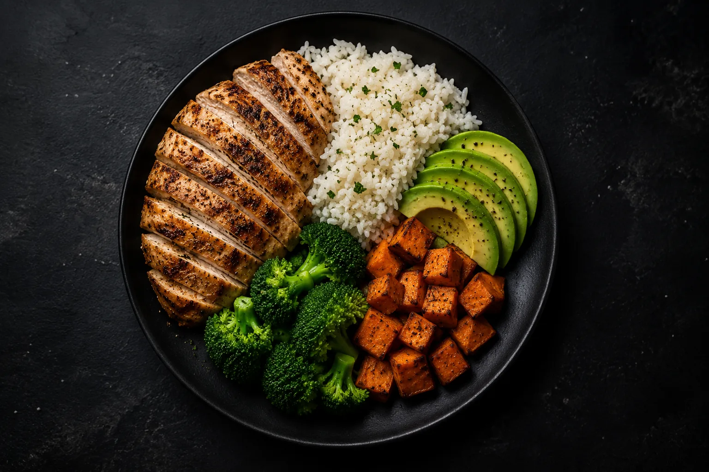
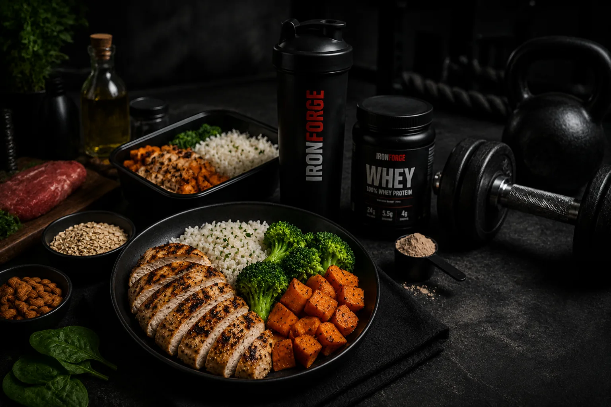
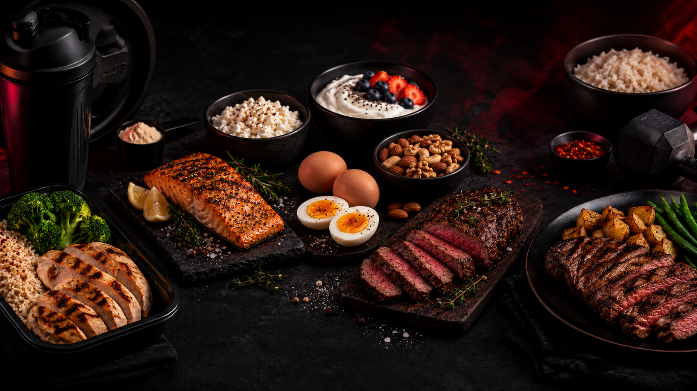

01
Energy First
Calories set the direction. Start there before obsessing over tiny details that cannot rescue the wrong overall intake.
Nutrition should make training easier to recover from, not harder to live with. Start with the big levers and build a system you can repeat.


Calories set the direction. Start there before obsessing over tiny details that cannot rescue the wrong overall intake.

Build meals around a reliable protein source and distribute intake through the day so recovery is easier to support.
Use carbohydrate where performance benefits from it most — especially around sessions with high volume or conditioning demand.

A plan should survive busy weeks, restaurants and imperfect days. Precision that cannot be repeated is not useful precision.
Use bodyweight trends, training performance, hunger and adherence together. One bad day is noise; several weeks moving the same direction is useful information.
CONTACT A NUTRITIONIST ↗Look at weight trend, gym performance, hunger and consistency — not a single isolated number.
Decide whether the issue is intake, recovery or adherence before making the plan more complicated.
Change one meaningful variable, then give it enough time to produce a readable trend.